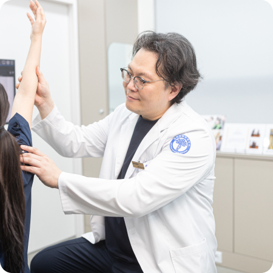
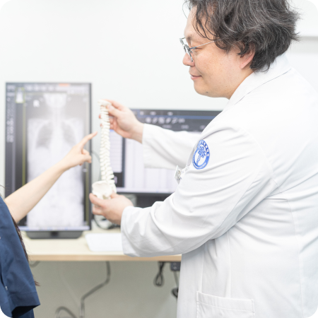

POINT 01
세심한 진단과 충분한 설명
통증이 나타나는 부위와 원인을 살펴보고 필요한 검사와 상태를 함께 확인합니다.
검사 결과와 치료 과정을 알기 쉽게 설명하여 안심하고 치료를 이어갈 수 있도록 돕겠습니다.
삼성G정형외과는 통증의 원인을 세심하게 살피고
건강한 움직임을 되찾는 모든 과정을 함께합니다.
아픈 부위만 치료하는 데 그치지 않고
다시 편안한 일상으로 돌아가는 과정까지 함께하겠습니다.

통증이 나타나는 부위와 원인을 살펴보고 필요한 검사와 상태를 함께 확인합니다.
검사 결과와 치료 과정을 알기 쉽게 설명하여 안심하고 치료를 이어갈 수 있도록 돕겠습니다.

증상의 정도와 생활환경, 검사 결과를 종합하여 현재 상태에 필요한 치료 방법을 계획합니다.
비수술치료부터 시술과 수술적 치료까지 불필요한 과정은 줄이고 필요한 치료를 우선하겠습니다.

진료실에서 검사와 치료가 유기적으로 이어지는 시스템과 시술 후 충분한 안정을 취할 수 있는 낮병동을 운영합니다.
치료가 끝난 이후에도 회복 상태를 세심하게 살피며 편안하게 일상으로 복귀할 수 있도록 함께하겠습니다.